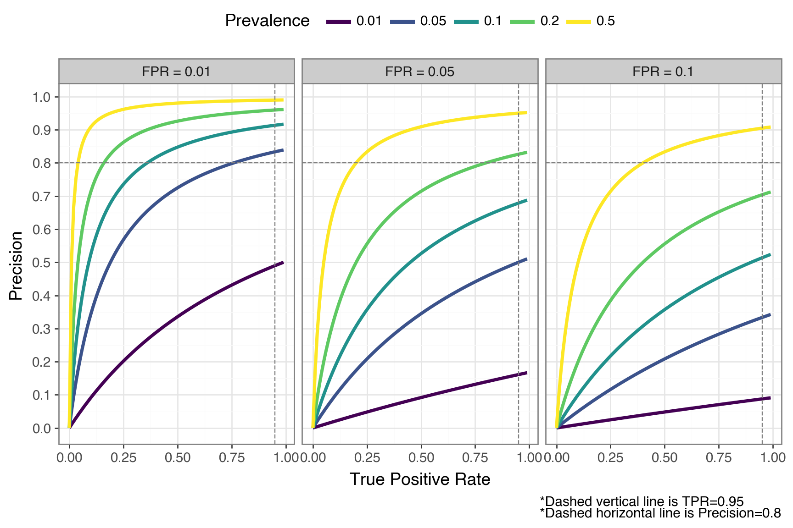
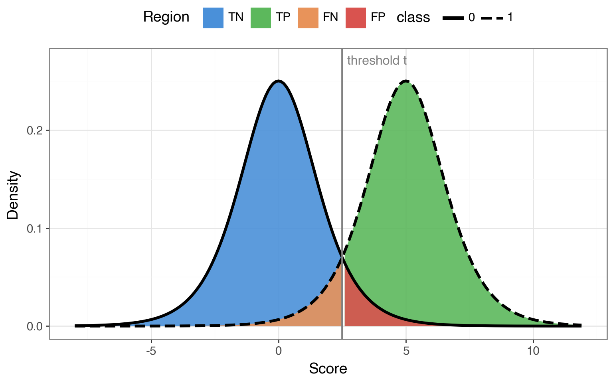
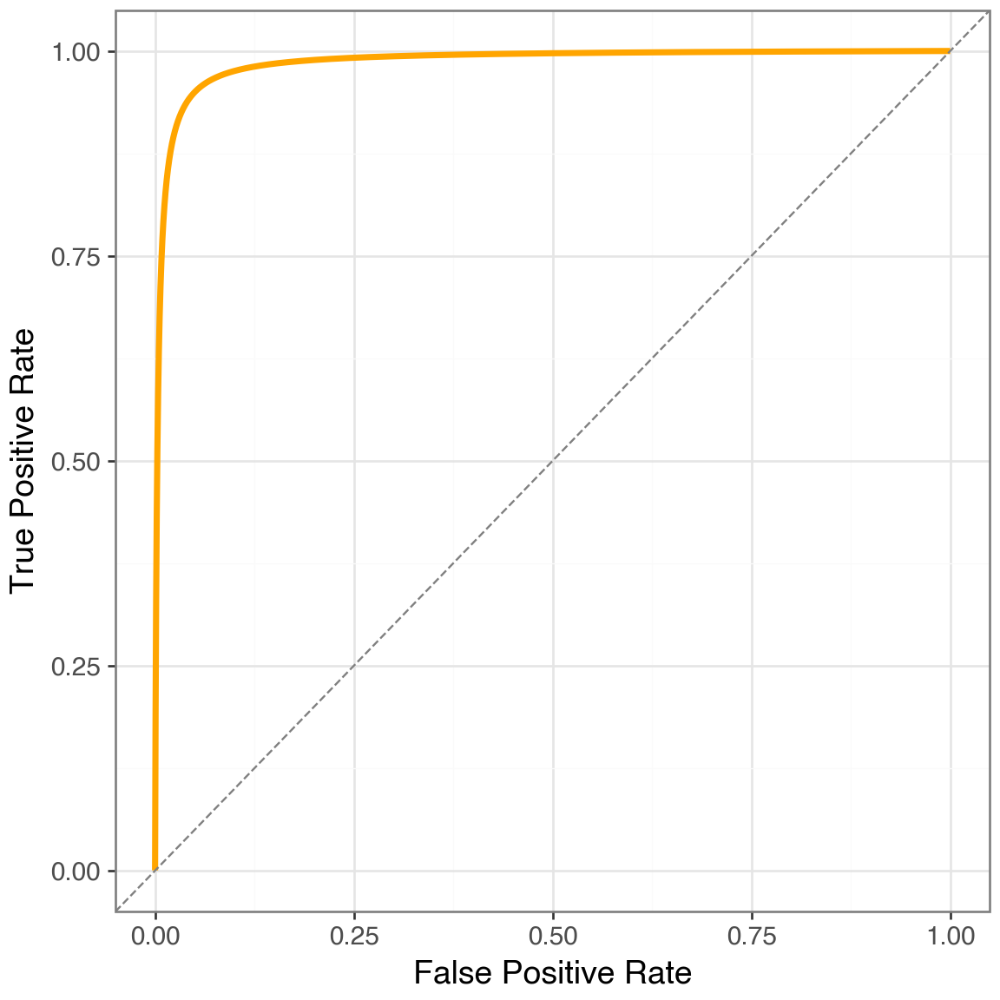
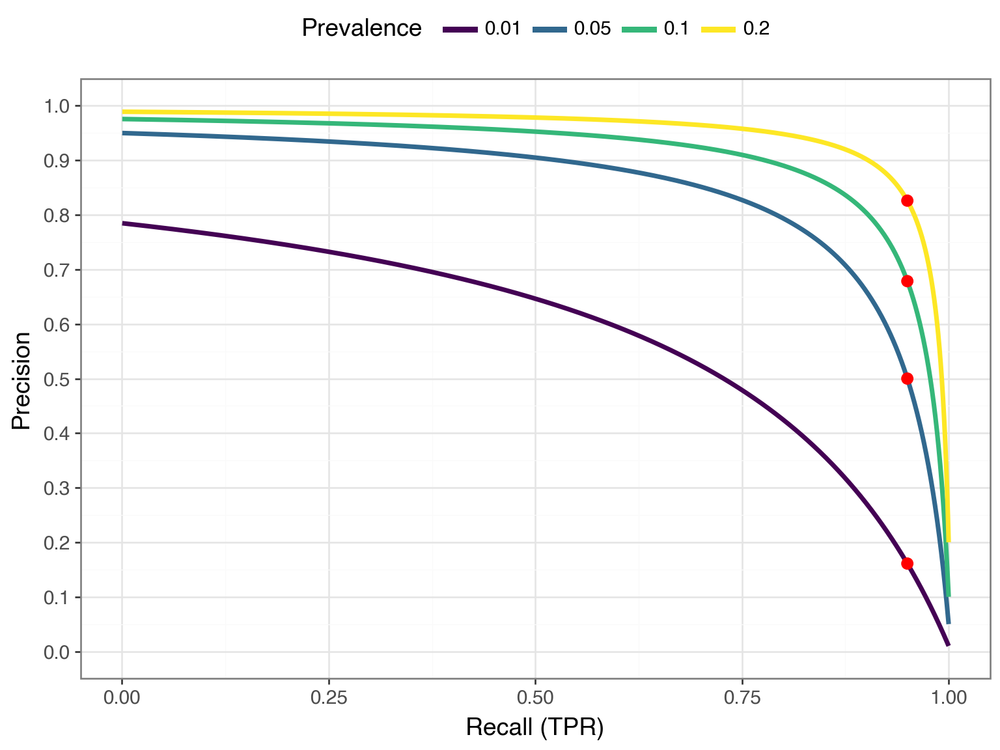
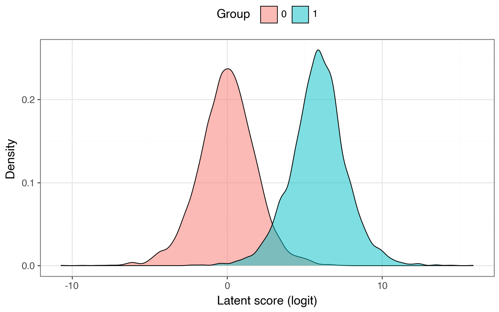

tpr = 0.95
fpr = 0.05
prevalence = 0.01
precision = tpr * prevalence / (tpr * prevalence + fpr * (1 - prevalence))
print(f"{precision = :.2}")precision = 0.16Even strong classifiers suffer low precision when the positive class is rare. I walk through some math to show what’s actually achievable in this setting.
March 31, 2026
The base rate of the positive class puts a ceiling on what precision is achievable, regardless of how good your model is. If you don’t understand your base rates, you don’t understand what precision is even feasible.
Say you’re building a model to flag fraudulent credit card transactions. Your model takes in some features, outputs a probability, and you classify a transaction as fraudulent if that probability crosses some threshold \(t\). To evaluate it, you’d naturally look at two things: the true positive rate (what fraction of actual frauds does the model catch?) and the false positive rate (what fraction of legitimate transactions does the model incorrectly flag?).
But there’s a third quantity worth paying attention to: precision. Of all the transactions the model flagged, how many are actually fraudulent? If each flag triggers a costly human review, precision tells you how much of that effort is wasted on false alarms.
Here’s the problem. Fraudulent transactions make up less than 1% of all credit card activity. When the positive class is that rare, even a model with strong TPR and low FPR can have terrible precision — most of its flags will be false positives.
This post walks through why that happens, and what precision you can realistically expect when the positive class is rare.
Let’s start with the four probabilities in the standard confusion matrix. Below, \(y\) is an observation’s true class and \(\hat{y}\) is the model’s predicted class — both take a value of \(1\) (positive) or \(0\) (negative). All four are conditional on the true class, so each row sums to 1.
\[ \begin{align} \text{True Positive Rate} &= p(\hat{y} = 1 | y = 1) \\ \text{False Negative Rate} &= p(\hat{y} = 0 | y = 1) \\ \text{False Positive Rate} &= p(\hat{y} = 1 | y = 0) \\ \text{True Negative Rate} &= p(\hat{y} = 0 | y = 0) \\ \end{align} \]
With these definitions in hand, let’s imagine a strong model that, at some threshold \(t\), achieves the following probabilities:
| \(\hat{y} = 1\) | \(\hat{y} = 0\) | |
|---|---|---|
| \(y = 1\) | 0.95 | 0.05 |
| \(y = 0\) | 0.05 | 0.95 |
That is, this model has a TPR of 0.95 and an FPR of 0.05. (For now, we’re treating these as independent knobs — in practice they’re coupled through the decision threshold, which we’ll get to later.) Sticking with our credit card example, this means the model
At first glance, this looks great. I think most practitioners would be proud of these numbers. But remember — each positive prediction generates a costly human review. So how costly is this model, really? To find out, we need to work out the precision.
Precision is defined as
\[ \text{Precision} = p(y = 1 | \hat{y} = 1) \]
or, the probability that a transaction the model flagged as fraudulent is actually fraudulent.
You might notice that this is a conditional probability we can work out with Bayes’ theorem. If we do that, we get
\[ \begin{align} p(y = 1 | \hat{y} = 1) &= \frac{% p(\hat{y} = 1 | y = 1)p(y = 1)% }{% p(\hat{y} = 1 | y = 1)p(y = 1) + p(\hat{y} = 1 | y = 0)p(y = 0)% } \end{align} \]
and plug in the numbers from our table. But we can’t actually compute precision until we’ve specified the prevalence of the positive and negative classes — that’s \(p(y=1)\) and \(p(y=0)\). We know from existing data that the prevalence of fraudulent transactions is less than 1%, but let’s be generous and round up to 1% so that \(p(y=1) = 0.01\) and \(p(y=0) = 0.99\).
Now we can finally compute precision for our seemingly strong model
precision = 0.16If you’ve seen the classical disease testing example, this result won’t surprise you:
A precision of 0.16 means that 84% of transactions flagged as fraudulent would be false positives — despite a TPR of 0.95 and an FPR of 0.05! The 0.95/0.05 split feels like a strong model, but Bayes’ theorem undermines that intuition when the classes are this imbalanced: the 99% of legitimate transactions, each with a small chance of being falsely flagged, easily outnumber the 1% of actual frauds.
Okay, so we’ve seen just how bad precision can get with a low base rate and a model that otherwise looks strong. Let’s build some intuition for what precision looks like across different combinations of TPR, FPR, and prevalence. You’d expect that increasing TPR or prevalence, or decreasing FPR, should improve precision — but by how much?
To find out, we’ll apply the same Bayes’ theorem calculation to a grid of these rates. In the plot below, each panel fixes the FPR; the colored lines show how precision varies with TPR at different prevalences.
import numpy as np
from plotnine import *
import polars as pl
from scipy.stats import logistic
def get_precision(tpr: np.array, fpr: float, prevalence: float = 0.05) -> np.array:
"""compute conditional precision, given true positive rate, false positve rate, and positive class prevalence"""
precision = tpr * prevalence / (tpr * prevalence + fpr * (1 - prevalence))
return precision
tprs = np.arange(0.0, 1.0, step=0.01)
fprs = [0.1, 0.05, 0.01]
prevalences = [0.01, 0.05, 0.1, 0.2, 0.5]
precision_dfs = []
for fpr in fprs:
for prevalence in prevalences:
# cast tpr array
precision = get_precision(tprs, fpr, prevalence)
if len(tprs) != len(precision):
print(f"{len(tprs) = }")
print(f"{len(precision) = }")
_df = pl.DataFrame({
"tpr": tprs,
"precision": precision,
"fpr": "FPR = " + str(fpr),
"prevalence": str(prevalence),
})
precision_dfs.append(_df)
precision_df = pl.concat(precision_dfs)
(
ggplot(precision_df, aes("tpr", "precision", color="prevalence"))
+ geom_line(size=1.5)
+ geom_vline(xintercept=0.95, color="gray", linetype="dashed")
+ geom_hline(yintercept=0.8, color="gray", linetype="dashed")
+ facet_wrap("~ fpr")
+ scale_colour_cmap_d()
+ scale_y_continuous(breaks=np.arange(0, 1.1, 0.1))
+ theme_bw(base_size=14)
+ theme(legend_position="top", figure_size=(9, 6))
+ labs(
x="True Positive Rate",
y="Precision",
color="Prevalence",
caption="*Dashed vertical line is TPR=0.95\n*Dashed horizontal line is Precision=0.8"
)
)
It’s worth sitting with this plot for a moment.
Consider the best-case panel (FPR = 0.01). Even with a perfect TPR of 1.0, a prevalence of 0.01 gets you only about 50% precision — half of your flagged cases are still false positives. To break 80% precision at that prevalence, you’d need an FPR well below 0.01.
Now look at the middle panel (FPR = 0.05). At a prevalence of 0.05 and a TPR of 0.95, precision lands around 0.50. That means for every real fraud you catch, you’re also flagging one legitimate transaction. And it only gets worse as prevalence drops: at 1% prevalence in that same panel, precision barely clears 0.15 regardless of how high your TPR goes.
The pattern is clear: when the positive class is rare, even small false positive rates can generate a flood of false positive that overwhelm the true positives. The base rate acts as a hard ceiling on precision.
Everything above treated TPR and FPR as knobs you can set independently: “suppose a model has 95% TPR and 5% FPR.” But a real model doesn’t work that way. TPR and FPR are both determined by a single decision threshold \(t\). If you increase \(t\) to cut down on false positives, you’ll inevitably miss more true positives too. The 0.95/0.05 operating point we examined is just one point along this trade-off.
To see the full picture, we’ll use a theoretical model that produces scores we can threshold. The simplest setup that lets us do this is the bilogistic SDT model. The bilogistic model represents a binary classifier where the negative class yields scores from a \(\text{Logistic}(0, 1)\) distribution and the positive class from a \(\text{Logistic}(\mu, 1)\) distribution. The separation \(\mu\) controls how good the model is — a larger \(\mu\) indicates that the model is better at telling the two classes apart.
Here’s what this looks like with an arbitrary separation of \(\mu = 5\). Any vertical line we draw becomes a decision threshold \(t\): everything to the right gets classified as positive. Sliding \(t\) left catches more true positives but also more false positives; sliding it right does the opposite.
# Show the general idea with an arbitrary mu
mu_demo = 5
xrange_demo = np.arange(-8, 12, 0.1)
demo_df = pl.concat([
pl.DataFrame({"x": xrange_demo, "y": logistic.pdf(xrange_demo), "class": "0"}),
pl.DataFrame({"x": xrange_demo, "y": logistic.pdf(xrange_demo, loc=mu_demo), "class": "1"}),
])
threshold_demo = 2.5
# Build shaded region dataframes
x_left = xrange_demo[xrange_demo <= threshold_demo]
x_right = xrange_demo[xrange_demo >= threshold_demo]
shade_tn = pl.DataFrame({"x": x_left, "y": logistic.pdf(x_left), "region": "TN"})
shade_fp = pl.DataFrame({"x": x_right, "y": logistic.pdf(x_right), "region": "FP"})
shade_fn = pl.DataFrame({"x": x_left, "y": logistic.pdf(x_left, loc=mu_demo), "region": "FN"})
shade_tp = pl.DataFrame({"x": x_right, "y": logistic.pdf(x_right, loc=mu_demo), "region": "TP"})
(
ggplot()
# Draw larger correct regions first, then smaller error regions on top
+ geom_ribbon(aes(x="x", ymin=0, ymax="y", fill="region"), data=shade_tn, alpha=0.9)
+ geom_ribbon(aes(x="x", ymin=0, ymax="y", fill="region"), data=shade_tp, alpha=0.9)
+ geom_ribbon(aes(x="x", ymin=0, ymax="y", fill="region"), data=shade_fn, alpha=0.9)
+ geom_ribbon(aes(x="x", ymin=0, ymax="y", fill="region"), data=shade_fp, alpha=0.9)
+ geom_line(aes(x="x", y="y", linetype="class"), data=demo_df, size=1.5)
+ geom_vline(xintercept=threshold_demo, color="gray", size=1)
+ annotate("text", x=threshold_demo + 0.2, y=0.27, label="threshold t", color="gray", size=12, ha="left")
+ scale_fill_manual(values={"TN": "#4a90d9", "TP": "#5cb85c", "FN": "#e8935a", "FP": "#d9534f"})
+ labs(x="Score", y="Density", color="Class", fill="Region")
+ theme_bw(base_size=14)
+ theme(legend_position="top", figure_size=(8, 5))
)
Because TPR, FPR, and precision are all determined by where we place that threshold, we can sweep \(t\) across the full range and trace out the complete trade-off.
Now let’s calibrate \(\mu\) so that there exists a threshold where TPR = 0.95 and TNR = 0.95 simultaneously — matching the model from the previous section. Once calibrated, we can see what happens at every operating point, not just the one we started with.
One thing to keep in mind: a model that can simultaneously achieve 0.95 TPR and 0.05 TPR is very strong. In practice, most classifiers won’t reach that level of separation —- so the curves that follow should be treated as optimistic upper bounds on what precision is achievable. The real-world picture is often messier.
def get_loc_p(tnr: float, tpr: float) -> float:
"""Find the location parameter mu for the positive class such that a single threshold t
simultaneously satisfies both TNR and TPR. The threshold is fixed by the negative class:
t = Logistic(0,1).ppf(TNR). Then mu is chosen so that the positive class CDF at t equals
1 - TPR, i.e., Logistic(mu,1).cdf(t) = 1 - TPR."""
z_n = logistic.ppf(tnr)
alpha = 1 - tpr
loc_p = z_n + np.log((1 - alpha) / alpha)
return loc_p
loc_n = 0
loc_p = get_loc_p(tnr=0.95, tpr=0.95)
print(f"{loc_p = :.2f}")
scale = 1
xrange_n = np.arange(-8, 8, 0.1)
xrange_p = xrange_n + loc_p
neg_df = pl.DataFrame({
"x": xrange_n,
"y": logistic.pdf(xrange_n),
"class": "0"
})
pos_df = pl.DataFrame({
"x": xrange_p,
"y": logistic.pdf(xrange_p, loc=loc_p),
"class": "1"
})
dist_df = pl.concat([neg_df, pos_df])loc_p = 5.89Here’s our calibrated model — the distributions are slightly further apart than in the demo above, reflecting the strong 0.95/0.95 performance:
Let’s now sweep the threshold across the full range and plot the ROC curve.
roc_df = pl.DataFrame({"fpr": fpr, "tpr": tpr})
(
ggplot(roc_df, aes("fpr", "tpr"))
+ geom_line(size=1.5, color="orange")
+ geom_abline(slope=1, intercept=0, linetype="dashed", color="gray")
+ labs(x="False Positive Rate", y="True Positive Rate")
+ scale_x_continuous(limits=(0, 1))
+ scale_y_continuous(limits=(0, 1))
+ theme_bw(base_size=14)
+ theme(figure_size=(6, 6))
)
The ROC curve looks excellent — it hugs the top-left corner, AUROC near 1.0. If you stopped here, you’d feel good about this model. That’s the same “looks great at first glance” feeling from the single-threshold example above.
But here’s the thing: the ROC curve is completely invariant to prevalence. TPR and FPR are both conditional on the true class, so the base rate never enters the picture. Whether 1% or 50% of transactions are fraudulent, the ROC curve looks identical. That’s useful for some purposes, but it means the ROC curve can’t tell you how many of your flags will be false positives in practice.
For that, we need the Precision-Recall curve. We’ll use the same threshold sweep and compute precision at each point via the Bayes’ theorem formula from earlier — but now at every threshold, not just one.
dfs = []
for prev in [0.01, 0.05, 0.1, 0.2]:
precision = (tpr * prev) / (tpr * prev + fpr * (1 - prev))
dfs.append(pl.DataFrame({
"tpr": tpr,
"precision": precision,
"prevalence": str(prev),
}))
pr_df = pl.concat(dfs)
# Mark the 0.95 TPR / 0.05 FPR operating point for each prevalence
dot_rows = []
for prev in [0.01, 0.05, 0.1, 0.2]:
prec_at_point = (0.95 * prev) / (0.95 * prev + 0.05 * (1 - prev))
dot_rows.append({"tpr": 0.95, "precision": prec_at_point, "prevalence": str(prev)})
dot_df = pl.DataFrame(dot_rows)
(
ggplot(pr_df, aes("tpr", "precision", color="prevalence"))
+ geom_line(size=1.5)
+ geom_point(data=dot_df, size=3, color="red")
+ scale_colour_cmap_d()
+ scale_x_continuous(limits=(0, 1))
+ scale_y_continuous(limits=(0, 1), breaks=np.arange(0, 1.1, 0.1))
+ labs(x="Recall (TPR)", y="Precision", color="Prevalence")
+ theme_bw(base_size=14)
+ theme(legend_position="top", figure_size=(8, 6))
)
The ROC curve was identical regardless of base rate. The PR curve is not. At 1% prevalence, the curve collapses — there’s no threshold that gives you both high recall and high precision. To push precision above 0.5, you have to sacrifice most of your recall. At 20% prevalence, the trade-off is much more forgiving.
This is the same problem from the single-threshold example, but now we can see it across every possible threshold, not just one. The base rate doesn’t just hurt precision at a single operating point — it reshapes the entire trade-off curve.
A high AUROC tells you the model can separate the classes. It doesn’t tell you what happens when you deploy it into a world where one class vastly outnumbers the other. And remember — the curves in this post used a very strong model. Most real classifiers will do worse, which means the precision ceilings shown here are optimistic.
Before you celebrate a strong ROC curve, check your base rates. They determine whether your model’s flags will be mostly signal or mostly noise — and if each flag triggers a costly action (a human review, an account freeze, a follow-up test), low precision means you’re burning resources on false positives. Understanding your base rates isn’t just a statistical nicety; it’s how you figure out whether the model is worth deploying at all.
You might have noticed that the x-axis in the bilogistic density plots doesn’t have obvious units. It represents the model’s logit output — the log-odds score a classifier produces before converting to a probability. The threshold \(t\) is just a cutoff on this logit scale: everything above \(t\) gets classified as positive.
This connects directly to logistic regression through its latent variable formulation. The idea is that behind every observed binary outcome \(y \in \{0, 1\}\), there’s a continuous latent variable \(y^*\) that determines the class:
\[ \begin{align} y_i^* &= X\beta + \epsilon_i, \quad \epsilon_i \sim \text{Logistic}(0, 1) \\ y_i &= \begin{cases} 1 & \text{if } y_i^* > 0 \\ 0 & \text{otherwise} \end{cases} \end{align} \]
The latent score \(y^*\) is exactly the logit-scale quantity from our bilogistic model. For the negative class (\(X\beta = 0\)), latent scores follow a Logistic\((0, 1)\) distribution. For the positive class (\(X\beta = \mu\)), they follow a Logistic\((\mu, 1)\). The threshold at 0 plays the role of our decision boundary. In other words, every time you fit a logistic regression, you’re implicitly working inside the bilogistic framework — and the base-rate ceiling on precision applies directly to your model’s predictions.
Let’s verify this correspondence by simulating data from the latent variable model using the same separation \(\mu\) we calibrated earlier, then fitting a logistic regression to recover \(\mu\).
The density of the latent scores by group recovers the same two-distribution picture we saw earlier:

Now let’s threshold \(y^*\) at 0 to get the observed binary outcome and fit a logistic regression. If the models correspond, the estimated group coefficient should land close to \(\mu \approx\) 5.89.
Optimization terminated successfully.
Current function value: 0.357873
Iterations 10
Logit Regression Results
==============================================================================
Dep. Variable: y No. Observations: 10000
Model: Logit Df Residuals: 9998
Method: MLE Df Model: 1
Date: Sun, 05 Apr 2026 Pseudo R-squ.: 0.3608
Time: 20:53:51 Log-Likelihood: -3578.7
converged: True LL-Null: -5599.1
Covariance Type: nonrobust LLR p-value: 0.000
==============================================================================
coef std err z P>|z| [0.025 0.975]
------------------------------------------------------------------------------
const 0.0312 0.028 1.103 0.270 -0.024 0.087
x1 5.6494 0.245 23.097 0.000 5.170 6.129
==============================================================================The estimated coefficient for x1 (the group indicator) lands close to the true \(\mu\) we used to generate the data. The logistic regression recovers the separation between the two distributions — the same parameter that controls model quality in the bilogistic framework.